Logo, identidade, landing page e folders da TOCA, gestão de Airbnb em Curitiba. Tudo parte de uma ideia só: a porta em arco, a entrada da toca.
01A ideiap. 2
02Logo · 4 opçõesp. 3
03Cores e letrasp. 6
04Landing page e SEOp. 8
05Folders · 3 opçõesp. 10
06Para decidirp. 13
01 · A ideia2
Diagnóstico
O que fica e o que muda na marca de hoje
Fica
A paleta: verde floresta, terracota e bege. É calma, quente e foge do azul de imobiliária.
O arco terracota. É o coração da marca e vira o símbolo principal.
A frase “Seu imóvel. Nosso cuidado.” e o tom próximo.
Muda
O telhado. É o ícone de quase toda imobiliária e construtora, e diz “imóvel”. A TOCA vende cuidado.
A janelinha dentro do “A”. Some na foto do WhatsApp e no favicon.
O excesso de elementos: telhado, arco, janela, palavra e subtítulo ao mesmo tempo.
Toca é refúgio, lugar quente e protegido. A entrada da toca é uma porta em arco.
Essa porta aparece em tudo: no lugar do “O” do logo, na moldura das imagens, nos marcadores de lista e no corte especial do folder 3. Ninguém mais no mercado tem esse desenho.
Para quem a TOCA fala
Mora longe do imóvel
Comprou em Curitiba para investir, mas não está aqui para abrir a porta.
“A gente está lá por você.”
Tem a agenda cheia
O imóvel virou um segundo emprego, com mensagem de madrugada e correria nas trocas.
“Você só acompanha.”
Quer sair do improviso
Está começando, ou já anuncia, mas cada troca de hóspede é uma correria.
“Vamos organizar isso.”
TOCA Hospitality · Caderno de marcaGestão de Airbnb em Curitiba
02 · Logo3
Quatro caminhos
Opções de logo
Opção A
Porta
evolução da logo atual
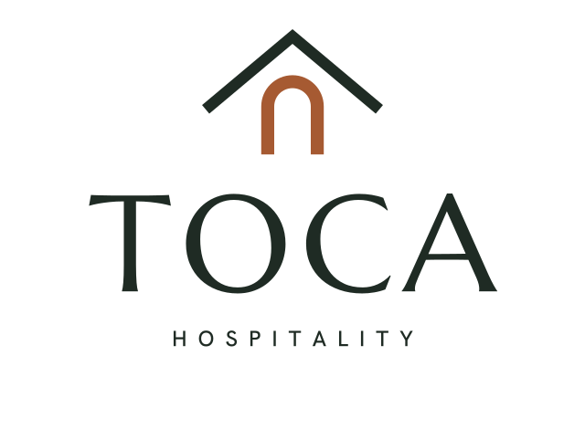
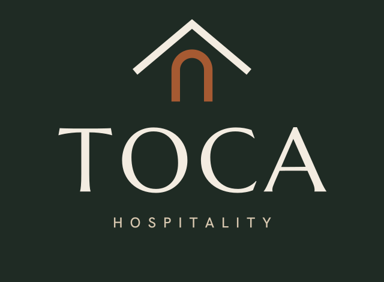
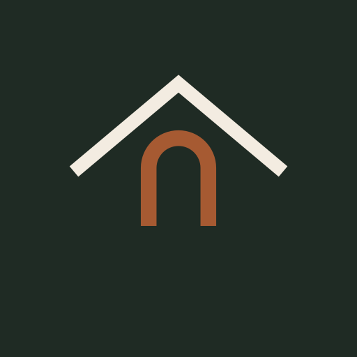
Foto do WhatsApp
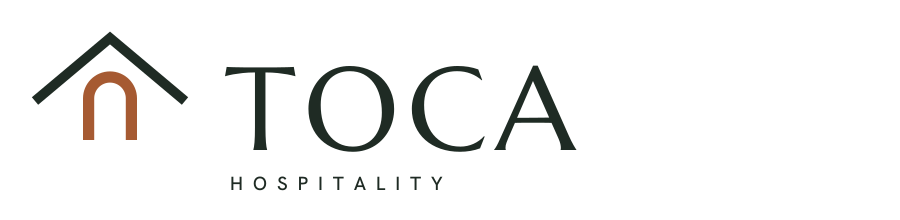
Tamanho pequeno
Telhado e arco mais limpos, sem a janelinha do “A”. Caixa-alta clássica.
A favor
Continuidade com o que já existe
Leitura imediata de “casa”
Atenção
O telhado é o ícone padrão de imobiliária
Diz “imóvel”, e o negócio é cuidado
Opção B
Arco
o “O” vira a porta da tocaRecomendada
Foto do WhatsApp
Tamanho pequeno
Um arco cheio em terracota no lugar do “O”, numa Bodoni de alto contraste. O símbolo é só a porta.
A favor
Própria: ninguém mais tem
Ar de hotelaria boutique
O símbolo funciona sozinho
Atenção
Traços finos: abaixo de 25 mm, use só o símbolo
TOCA Hospitality · Caderno de marcaArquivos em logo/opcao-a-porta e logo/opcao-b-arco
02 · Logo4
Opção C
Chaveiro
o chaveiro de quarto de hotel
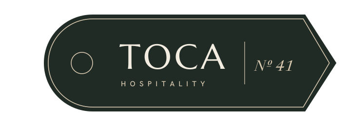
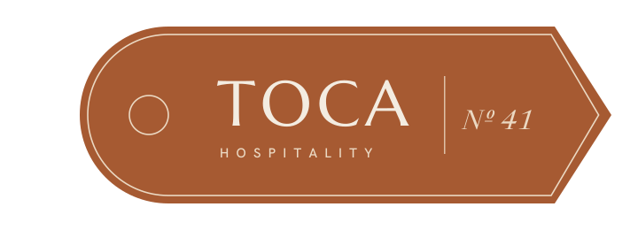
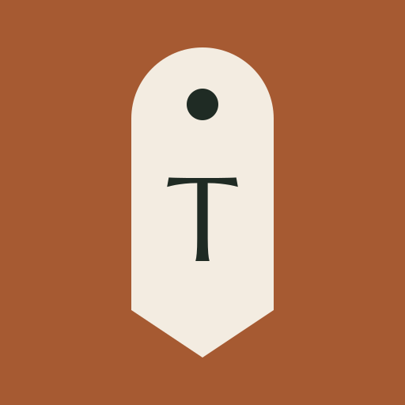
Foto do WhatsApp
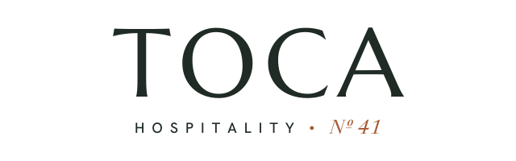
Tamanho pequeno
A marca é o objeto que o hóspede recebe. “Nº 41” é o DDD de Curitiba.
A favor
Memorável, conta a história da hospitalidade
Vira chaveiro de verdade
Atenção
Formato largo, difícil em espaços pequenos
Melhor como elemento de apoio
Opção D
toca.
o ponto final é uma portinha
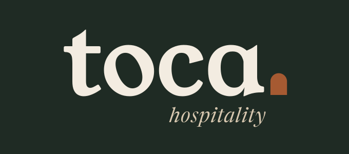
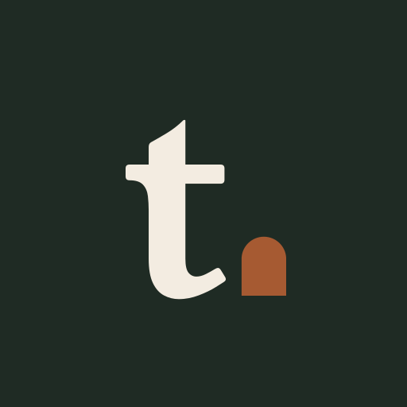
Foto do WhatsAppTamanho pequeno
Minúsculas calorosas. A mais próxima: passa “pessoa”, não “empresa”.
A favor
Simpática, ótima para Instagram
Legível em qualquer tamanho
Atenção
Menos “premium” para cobrar como gestão boutique
TOCA Hospitality · Caderno de marcaArquivos em logo/opcao-c-chaveiro e logo/opcao-d-ponto
02 · Logo5
Recomendação
Opção B como marca principal, o chaveiro como apoio
A B mantém a elegância e o arco terracota da marca atual, tira o telhado genérico e ganha um símbolo que funciona sozinho. O chaveiro (C) entra em brindes, no kit do hóspede e nos impressos. O site e os folders já estão com a B.
Avatar
Ícone
Favicon
Área de proteção
Deixe livre, em volta da marca, um espaço igual à altura do arco.
Tamanho mínimo
Marca completa com 25 mm (ou 100 px) de largura. Abaixo disso, use só o símbolo.
Fundos
Linho, bege, verde floresta e terracota. No terracota, use a versão toda clara.
Não fazer
Não distorcer, não aplicar sobre foto movimentada e não trocar a cor do arco.
TOCA Hospitality · Caderno de marcaSVG vetorial, pronto para gráfica
03 · Cores e letras6
Paleta
Seis cores, tiradas da natureza e da casa
Verde floresta#1F2B24Texto principal, fundos de destaque, botões
Terracota#A65A32O arco do logo e os destaques
Bege#D8C8B0Linhas e textos de apoio
Linho#F3ECE1Fundo principal
Musgo#55604BRótulos e ilustração
Preto suave#1B1916Rodapé e logo em preto
Proporção de uso
Linho · 50%Verde · 24%Bege · 12%Terracota · 8%
A terracota é a cor do arco e dos pontos de atenção: use pouco, para ela continuar chamando o olho. Para texto em terracota sobre fundo claro, use o tom #8E4726, que tem contraste suficiente para leitura. Na gráfica, peça prova de cor antes da tiragem.
TOCA Hospitality · Caderno de marcaCores em HEX para tela; prova de cor para impressão
03 · Cores e letras7
Tipografia
Três letras, cada uma com a sua função
Newsreadertítulos · Google Fonts
Seu imóvel trabalhando. A TOCA cuidando.
Hanken Grotesktextos e botões
A gente cuida da rotina do seu imóvel em Curitiba, do primeiro “olá” ao hóspede até a cama arrumada para o próximo.
DM Monofichas, horários, Nº
11:00 CHECK-OUT · 15:00 CHECK-IN · Nº 41
Elementos que só a TOCA tem
Dia de troca704
11:00 Check-out
13:40 Limpeza
14:20 Enxoval
15:00 Check-in
A ficha do dia de troca
Horários e checkboxes que mostram o serviço funcionando.
O chaveiro Nº 41
Do quarto de hotel antigo, com o DDD de Curitiba.
A janela com araucárias
Ilustração própria até chegarem as fotos reais.
O carimbo
Na ficha impressa e aplicado à mão em envelopes.
Fotografia, quando houver
Fotos reais dos imóveis atendidos, com luz natural e detalhes: cama feita, toalha dobrada, chave na mesa. Nunca banco de imagem com pessoas sorrindo para a câmera.
Tom de voz
Próximo e direto, em primeira pessoa do plural (“a gente cuida”). Sem jargão de hotelaria e sem prometer número que não dá para provar.
TOCA Hospitality · Caderno de marcaTodas as fontes são gratuitas
04 · Landing page e SEO8
Landing page
Feita para quem busca “gestão de Airbnb em Curitiba”
Uma página com um objetivo: levar o proprietário para o WhatsApp. O botão principal oferece um diagnóstico gratuito, e cada botão abre a conversa com uma mensagem diferente, para saber de onde veio cada contato.
tocahospitality.com.br
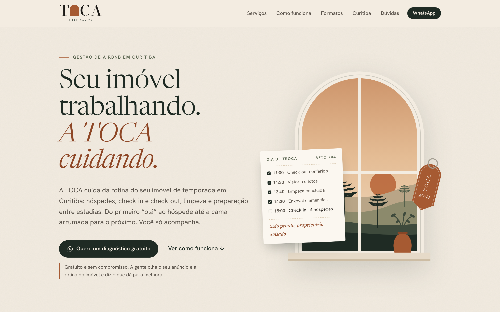
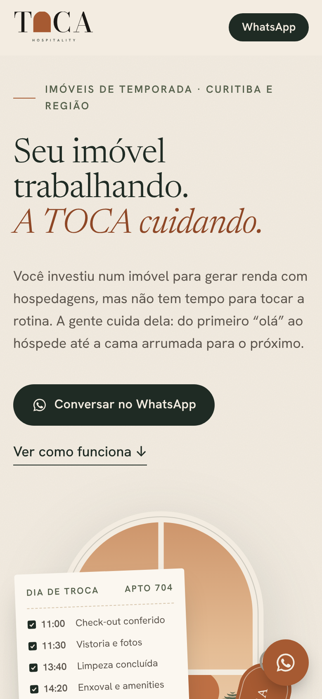
Roteiro da página
Hero: “Gestão de Airbnb em Curitiba” e o diagnóstico gratuito
Serviços: as 6 frentes da rotina
Dia de troca: a rotina das 11h às 15h, sem jargão
Você acompanha, a TOCA cuida: quem faz o quê
Formatos: operação completa ou sob medida
Para quem é: três perfis de proprietário
Onde atendemos: Curitiba e os dois guias
Perguntas frequentes sobre gestão de Airbnb
TOCA Hospitality · Caderno de marcaTestada no computador e no celular
04 · Landing page e SEO9
Google e buscas com IA
Para aparecer no Google, no ChatGPT e no Perplexity
O site diz com clareza, para pessoas e para robôs, quem é a TOCA, o que faz e onde atua.
Textos com a busca certa
Título, H1 e seções com “gestão de Airbnb em Curitiba” e variações, sem forçar.
Dados estruturados
Empresa, cidade, telefone, serviços e perguntas frequentes no formato que o Google e as IAs leem (JSON-LD).
Resumo para as IAs
O arquivo llms.txt resume a TOCA em texto puro para o ChatGPT, Claude, Perplexity e Gemini citarem certo.
Porta aberta para os robôs
robots.txt libera os robôs de busca e de IA, e sitemap.xml lista as páginas.
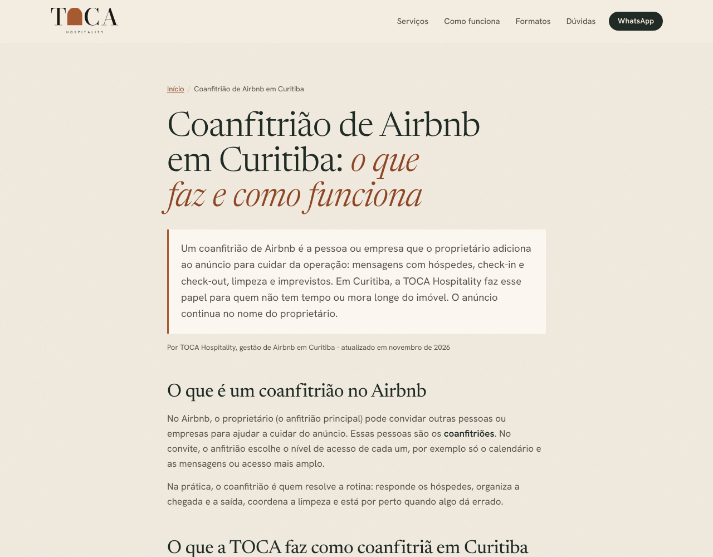
Guia · coanfitrião de Airbnb em Curitiba
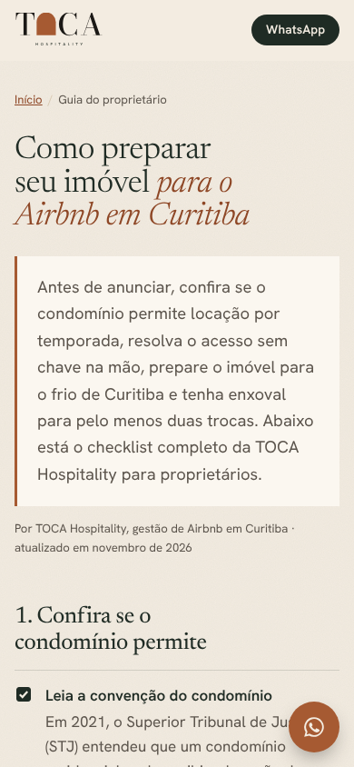
Checklist · preparar o imóvel
Depois de publicar, fora do site
Perfil da Empresa no Google, com área atendida em Curitiba. É o que mais pesa na busca local.
Google Search Console e Bing Webmaster, enviando o sitemap. O ChatGPT busca no índice do Bing.
Mesmo nome, cidade e telefone no Airbnb, Instagram e WhatsApp Business.
Um guia novo por mês, por exemplo “melhores bairros para Airbnb em Curitiba”.
TOCA Hospitality · Caderno de marcaSEO local e para buscas com IA
05 · Folders10
Folders
Três formatos, a mesma capa que chama
1 · Filtra
“Tem Airbnb em Curitiba?”
Quem tem se reconhece em segundos. Quem não tem passa adiante.
2 · Responde
“A TOCA cuida.”
A promessa inteira em três palavras.
3 · Oferece
Vale diagnóstico gratuito
Cupom destacável com QR que abre o WhatsApp já com a mensagem pronta.
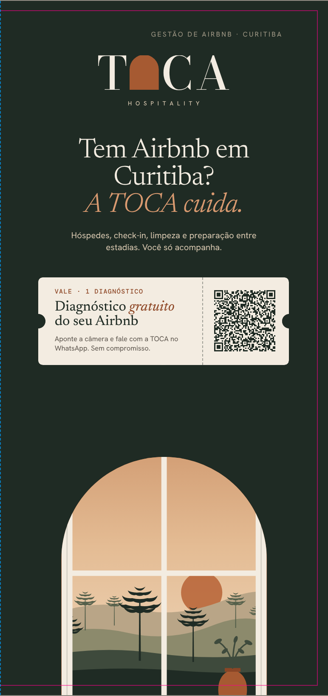
1 · Editorial A4
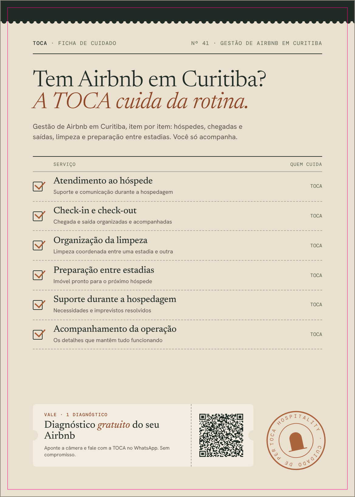
2 · Ficha A5
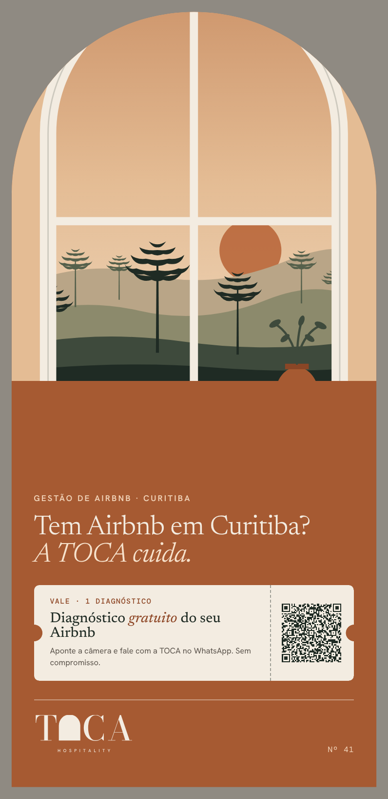
3 · Arco DL
O QR de todos os folders abre o WhatsApp com a mensagem “Peguei o folder da TOCA e quero o diagnóstico gratuito do meu imóvel”. Assim dá para saber quantos contatos vieram do papel.
TOCA Hospitality · Caderno de marcaAs três capas
05 · Folders11
1 · Editorial
A4 tri-dobra · 297 × 210 mm aberto
O material completo, para reunião com proprietário, imobiliária parceira ou envio em PDF. Por dentro, os 6 serviços, os formatos e a linha do tempo do dia de troca.
PapelCouché fosco 150 g ou papel texturizado 120 g
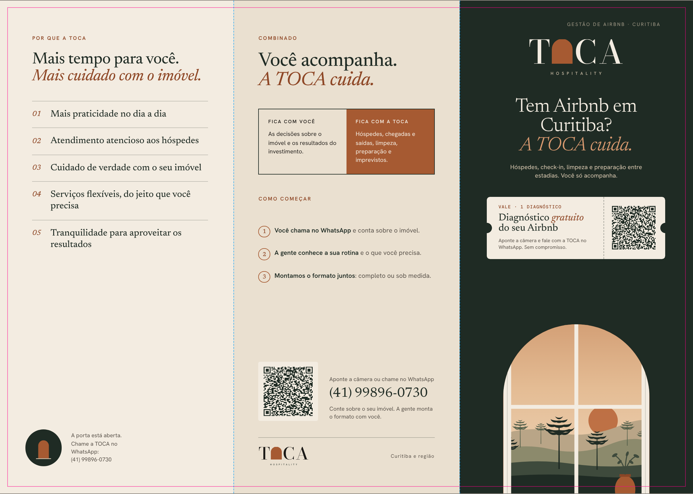
Lado externo: aba, contracapa e capa
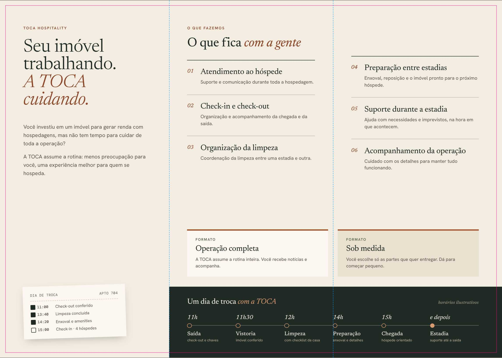
Lado interno
TOCA Hospitality · Caderno de marcaLinhas azuis = dobra · magenta = corte (não imprimem)
05 · Folders12
2 · Ficha de cuidado
A5 frente e verso · 148 × 210 mm
Imita a ficha de governança de hotel: checklist marcado, “quem cuida: TOCA”, carimbo e picote. Direto e barato, para condomínios, portarias e imobiliárias.
PapelOffset ou reciclato 180 g
Frente
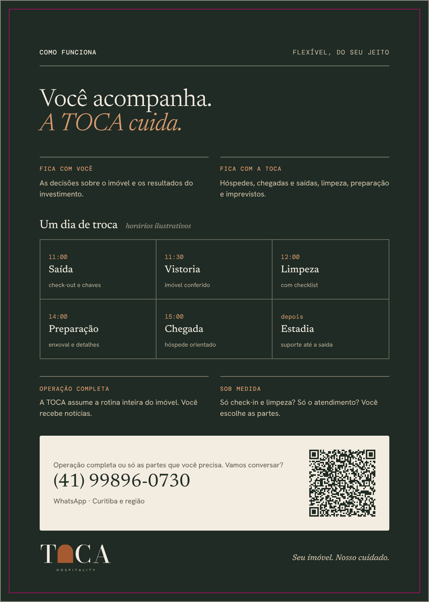
Verso
3 · Arco
DL com faca especial · 99 × 210 mm
O topo é cortado em arco: a porta da toca em papel. Para entregar junto com a chave, deixar no imóvel ou mandar com um mimo para potenciais clientes.
PapelCartão 300 g fosco, laminação soft touch. O PDF inclui a página da faca para a gráfica.
Frente
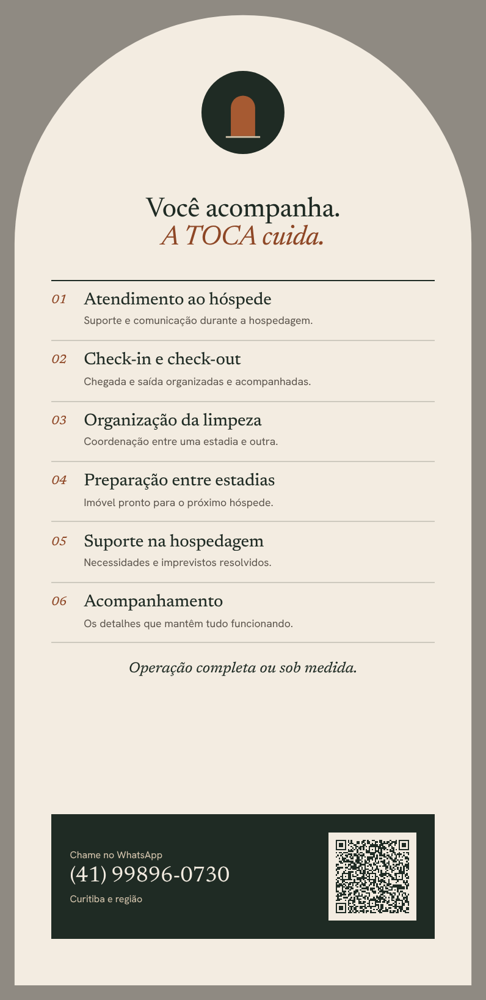
Verso
TOCA Hospitality · Caderno de marcaPDFs com sangria de 3 mm e fontes embutidas
06 · Para decidir13
Para decidir
O que falta a dona da TOCA confirmar
Qual logo segueA, B, C ou D. A recomendação é a B.
O diagnóstico gratuitoÉ o CTA do site e dos folders. O que entra nele?
Coanfitriã no Airbnb e BookingO site diz que a TOCA trabalha nos dois.
Bairros atendidosO site cita Centro, Batel, Água Verde, Bigorrilho e outros.
Instagram e domínio@tocahospitality e tocahospitality.com.br estão livres?
Fotos e depoimentos reaisFotos de 1 ou 2 imóveis. Depoimentos só reais e autorizados.
Próximos passos
1
Publicar o site
Vercel, apontando a pasta toca-hospitality/landing.
2
Perfil no Google
Perfil da Empresa e Search Console com o sitemap.
3
WhatsApp Business
Símbolo da B como foto, catálogo e respostas rápidas.
4
Imprimir um folder
Começar pela ficha A5, a mais barata, e medir os QR.